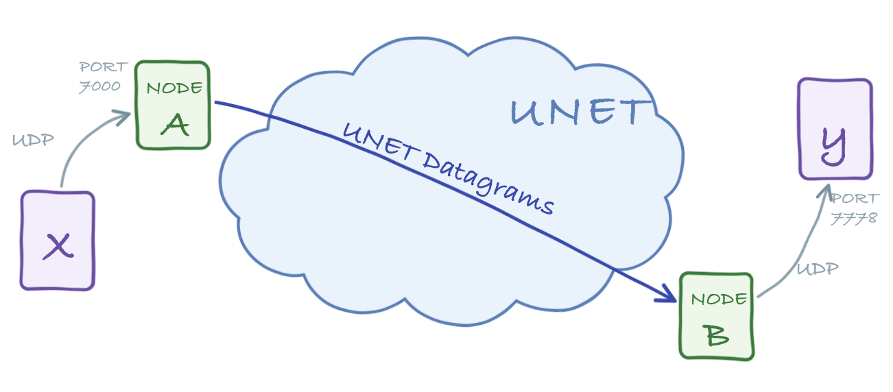

The following parameter determines the service provider used by all the UDP portals:
dsp– datagram service provider (remote service provider preferred)
A portal is a transparent connection across a Unet. Data going in through one end of the portal travels through the network and emerges from the other end. Unlike the UnetSocket API (Chapter 9), which requires an application to be written against UnetStack, a portal lets an unmodified application talk over a Unet using technology it already understands — a UDP/IP socket, a TCP/IP socket, or a serial port. (Portals are agents living inside the node’s container, one of the “doors” into UnetStack pictured in Figure 9.1.)
Imagine a seabed sensor connected to a laptop by an RS-232 serial cable. If we wanted to cut the cable and replace it with a wireless underwater link, we could set up a serial portal at each end: the sensor and the laptop would continue to talk over what looks like a serial connection, while the bytes actually travel acoustically through the Unet. Similarly, an application that publishes data over UDP or TCP can be tunneled through a Unet using a UDP or TCP portal.
Portals are convenient, but applications written for the Internet or for serial connections do not understand the constraints and characteristics of a Unet. They may assume abundant bandwidth, or expect millisecond latencies that an acoustic channel cannot provide. Use portals where this mismatch is acceptable (small messages, latency-tolerant protocols), and prefer the UnetSocket API (Chapter 9) when you need to adapt an application’s behavior to the network.
All portals carry data across the Unet as datagrams (Chapter 16), so common datagram attributes — peer address, reliability and priority — apply.
The UdpPortal agent maps UDP datagrams to Unet datagrams. It listens for UDP packets on a configured port and forwards each packet as a datagram to a peer node. In the reverse direction, datagrams arriving from the network are delivered as UDP packets to a configured client address and port. A single UdpPortal agent can manage many independent portals, each identified by an index (portal[1], portal[2], …).

UDP portals are carried over the REMOTE service (Chapter 24): the agent forwards each UDP packet as a RemoteMessageReq to its peer, so the dsp (datagram service provider) parameter points at the remote agent. Because portals are distinguished by their index — carried in the message and matched at the far end — rather than by a protocol number, a UDP portal has no protocol-number attribute. The matching portal index must be configured on both nodes, so that traffic entering portal i on one node emerges from portal i on the other.
The following parameter determines the service provider used by all the UDP portals:
dsp – datagram service provider (remote service provider preferred)Each configured portal additionally supports the following indexed parameters:
The following parameters control the behavior of each UDP portal configured:
port – UDP port number to listen to for data to transmitclientIP – client IP address to send received data toclientPort – client UDP port number to send received data topeer – peer node address to transmit data toreliability – datagram reliabilitypriority – datagram priorityrobustness – datagram robustnessttl – datagram time-to-live (0 for TTL_MAILBOX, negative for NaN)mailbox – message mailbox (only if ttl is TTL_MAILBOX)To see how this works, start the 2-node network simulation:
$ bin/unet samples/2-node-network.groovy
2-node network
--------------
Node A: tcp://localhost:1101, http://localhost:8081/
Node B: tcp://localhost:1102, http://localhost:8082/On node A, add a UDP portal that listens on UDP port 7000 and forwards to node B:
> container.add 'portal', new org.arl.unet.portal.UdpPortal();
> portal[1].port = 7000
> portal[1].peer = host('B')On node B, configure the same portal index to deliver received datagrams to a local UDP client at port 7778:
> container.add 'portal', new org.arl.unet.portal.UdpPortal();
> portal[1].clientIP = '127.0.0.1'
> portal[1].clientPort = 7778We can now test the portal with netcat. Start a UDP listener on node B’s side (this stands in for the application that consumes the data):
$ nc -u -l 7778and send some text into the portal on node A’s side:
$ nc -u 127.0.0.1 7000
helloAfter a few seconds, hello emerges from the listener on the other side, having traveled through the Unet.
The example above pipes data one way, but each portal index is inherently bidirectional: port/peer handle traffic into the Unet (UDP packets arriving on port are delivered to node peer), while clientIP/clientPort handle traffic out of it (data arriving from the Unet is forwarded there as UDP packets). Configure both halves at each end — with each node’s peer pointing at the other — and applications on the two sides can talk in both directions through the same portal index.
Because a UDP portal carries arbitrary UDP traffic, it can even tunnel a video stream. With a high-speed acoustic link, point a video player at the receiving side:
$ ffplay udp://127.0.0.1:7778and stream a heavily compressed video into the sending side:
$ ffmpeg -re -i movie.m4v -an -s cif -r 6 -c:v libx264 -b:v 15k -f mpegts udp://127.0.0.1:7000?pkt_size=512The ffmpeg encoding flags (frame rate, bitrate, packet size) must be tuned to the data rate your link can sustain.
A single UdpPortal agent can host up to 256 independent portals, each identified by an index from 1 to 256. Every index carries its own complete set of parameters (port, peer, clientIP, clientPort, and so on), so one agent can bridge several unrelated UDP applications at the same time — each listening on a different local port and mapped to a different peer node and client.
In the examples above we only used portal index 1. To add more portals, simply configure additional indices. Alongside portal[1], we can route a second application from UDP port 7002 to a different peer:
> portal[2].port = 7002
> portal[2].peer = host('C')Setting an index’s port to a non-zero value starts listening on that UDP port; setting it back to 0 stops that portal. Reading portal[2] shows only that portal’s configuration, independent of portal[1].
The portal index is carried inside each datagram, so traffic entering portal i on one node emerges from portal i on the peer node. The matching index must therefore be configured at both ends: portal[2] on the sending node pairs with portal[2] on the receiving node, just as portal[1] did earlier.
If you would rather configure a portal in a single step instead of setting parameters one at a time, the agent’s addPortal method takes an index and a map of parameters:
> container.getAgent(portal).addPortal(2, [
- port: 7002,
- peer: host('C'),
- clientIP: '127.0.0.1',
- clientPort: 7779
- ])The Portal agent provides transparent transport for TCP/IP and serial connections, using the fjåge connector framework. The agent buffers incoming bytes and transmits them as a datagram when a delimiter byte is seen (by default a carriage return or newline) or when the connection has been idle for timeout milliseconds. Datagrams arriving from the network are written back out to the connection.
Unlike the UdpPortal, the Portal agent sends its data as ordinary DatagramReq messages, and its dsp parameter defaults to the LINK service provider (single-hop). It uses a protocol number to distinguish portal traffic from other datagrams; set dsp to a higher-level DATAGRAM provider (such as the router or remote agent) if you need the portal to span multiple hops.
dsp – datagram service provider agent namepeer – peer node addressprotocol – protocol number to use for datagramsreliability – whether to use reliable datagramspriority – priority of datagramstimeout – idle timeout to transmit pending data (milliseconds)delimiters – delimiter bytes for end of message (default: [10, 13])A TCP portal is created by giving the Portal agent a TCP port to listen on. Restart the 2-node network, and on node A add a portal listening on port 7000:
> container.add 'portal', new org.arl.unet.portal.Portal(7000);
> portal.peer = host('B')On node B, add a portal listening on port 7001:
> container.add 'portal', new org.arl.unet.portal.Portal(7001);
> portal.peer = host('A')Connect a netcat client to node A’s portal:
$ nc localhost 7000and another to node B’s portal:
$ nc localhost 7001Anything typed into one client appears at the other after traveling through the Unet. The TCP portal is bidirectional, so the connection works both ways.
A serial portal is created the same way, but pointing the Portal agent at a serial device instead of a TCP port:
> container.add 'portal', new org.arl.unet.portal.Portal('/dev/ttyS0', 9600, 'N81');
> portal.peer = host('B')Here /dev/ttyS0 is the serial device, 9600 is the baud rate, and N81 specifies no parity, 8 data bits and 1 stop bit. This is useful for replacing a serial cable with a wireless Unet link, or for connecting a legacy serial application to a modem that exposes a serial interface. Many modern computers no longer have serial ports, so serial portals are most commonly used directly on hardware nodes.